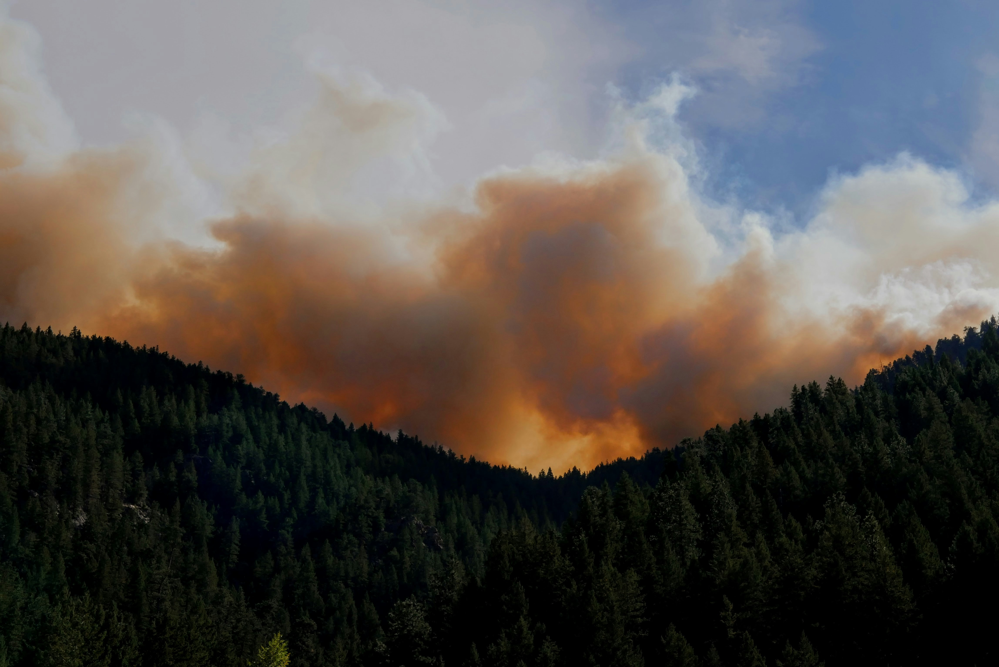
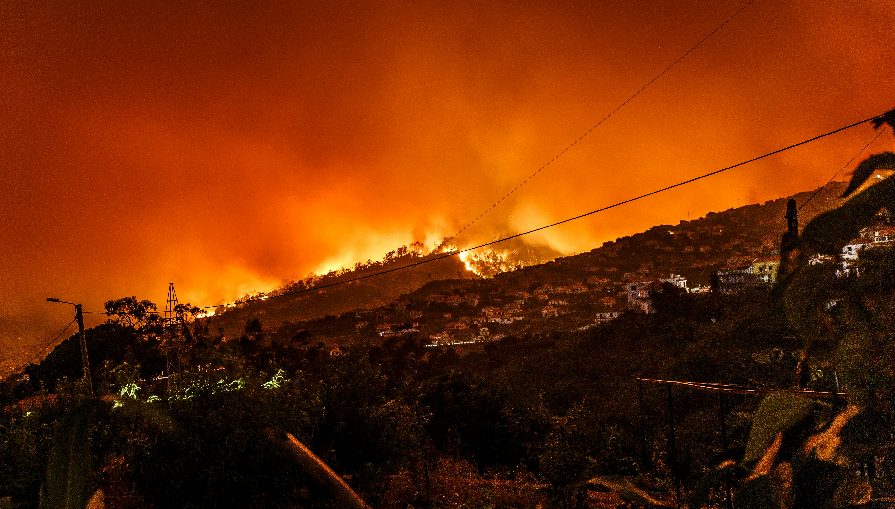

Quais são as causas das queimadas?
As queimadas no Brasil são causadas principalmente por atividades humanas, como desmatamento e expansão agropecuária, onde o fogo é usado para limpar áreas para plantio ou pastagem. A prática ilegal de queimadas também é comum, visando grilagem de terras ou exploração de madeira. Fatores naturais, como secas prolongadas e mudanças climáticas, aumentam o risco, especialmente em regiões como a Amazônia e o Cerrado. A redução na fiscalização ambiental e a flexibilização de políticas públicas também têm contribuído para o aumento das queimadas, que são agravadas por tradições culturais de manejo do solo com o uso de fogo.

